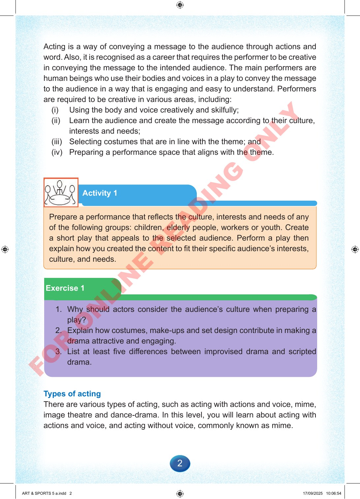

2
Acting
is
a
way
of
conveying
a
message
to
the
audience
through
actions
and
word.
Also,
it
is
recognised
as
a
career
that
requires
the
performer
to
be
creative
in
conveying
the
message
to
the
intended
audience.
The
main
performers
are
human
beings
who
use
their
bodies
and
voices
in
a
play
to
convey
the
message
to
the
audience
in
a
way
that
is
engaging
and
easy
to
understand.
Performers
are
required
to
be
creative
in
various
areas,
including:
(i)
Using
the
body
and
voice
creatively
and
skilfully;
(ii)
Learn
the
audience
and
create
the
message
according
to
their
culture,
interests
and
needs;
(iii)
Selecting
costumes
that
are
in
line
with
the
theme;
and
(iv)
Preparing
a
performance
space
that
aligns
with
the
theme.
Activity
1
Prepare
a
performance
that
reflects
the
culture,
interests
and
needs
of
any
of
the
following
groups:
children,
elderly
people,
workers
or
youth.
Create
a
short
play
that
appeals
to
the
selected
audience.
Perform
a
play
then
explain
how
you
created
the
content
to
fit
their
specific
audience’s
interests,
culture,
and
needs.
Exercise
1
1.
Why
should
actors
consider
the
audience’s
culture
when
preparing
a
play?
2.
Explain
how
costumes,
make-ups
and
set
design
contribute
in
making
a
drama
attractive
and
engaging.
3.
List
at
least
five
differences
between
improvised
drama
and
scripted
drama.
Types
of
acting
There
are
various
types
of
acting,
such
as
acting
with
actions
and
voice,
mime,
image
theatre
and
dance-drama.
In
this
level,
you
will
learn
about
acting
with
actions
and
voice,
and
acting
without
voice,
commonly
known
as
mime.
ART
&
SPORTS
5
a.indd
2
ART
&
SPORTS
5
a.indd
2
17/09/2025
10:06:54
17/09/2025
10:06:54
F
O
R
O
N
L
I
N
E
R
E
A
D
I
N
G
O
N
L
Y